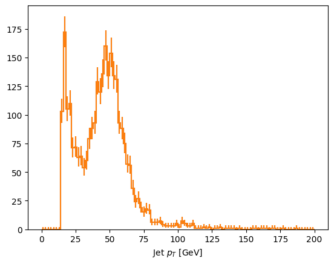

Original jupyter notebook by Iason Krommydas: https://github.com/ikrommyd/coffea-virtual-array-demo/blob/main/coffea_ADL_and_docs.ipynb
[ ]:
# to get the test root file manually
# !wget {'https://github.com/ikrommyd/coffea-virtual-array-demo/raw/de75f6d8a17be5cb1c71dbbf962b366fc92dc251/data/DYto2E.root'}
--2025-07-14 14:29:35-- https://github.com/ikrommyd/coffea-virtual-array-demo/raw/de75f6d8a17be5cb1c71dbbf962b366fc92dc251/data/DYto2E.root
Resolving github.com (github.com)... 140.82.116.3
Connecting to github.com (github.com)|140.82.116.3|:443... connected.
HTTP request sent, awaiting response... 302 Found
Location: https://media.githubusercontent.com/media/ikrommyd/coffea-virtual-array-demo/de75f6d8a17be5cb1c71dbbf962b366fc92dc251/data/DYto2E.root [following]
--2025-07-14 14:29:35-- https://media.githubusercontent.com/media/ikrommyd/coffea-virtual-array-demo/de75f6d8a17be5cb1c71dbbf962b366fc92dc251/data/DYto2E.root
Resolving media.githubusercontent.com (media.githubusercontent.com)... 185.199.108.133, 185.199.109.133, 185.199.110.133, ...
Connecting to media.githubusercontent.com (media.githubusercontent.com)|185.199.108.133|:443... connected.
HTTP request sent, awaiting response... 200 OK
Length: 3376397 (3.2M) [application/octet-stream]
Saving to: ‘DYto2E.root’
DYto2E.root 100%[===================>] 3.22M --.-KB/s in 0.05s
2025-07-14 14:29:35 (60.3 MB/s) - ‘DYto2E.root’ saved [3376397/3376397]
Install libraries
[ ]:
!pip install awkward hist
Collecting awkward
Downloading awkward-2.8.5-py3-none-any.whl.metadata (6.9 kB)
Collecting hist
Downloading hist-2.8.1-py3-none-any.whl.metadata (16 kB)
Collecting awkward-cpp==47 (from awkward)
Downloading awkward_cpp-47-cp311-cp311-manylinux_2_27_x86_64.manylinux_2_28_x86_64.whl.metadata (2.1 kB)
Requirement already satisfied: fsspec>=2022.11.0 in /usr/local/lib/python3.11/dist-packages (from awkward) (2025.3.2)
Requirement already satisfied: importlib-metadata>=4.13.0 in /usr/local/lib/python3.11/dist-packages (from awkward) (8.7.0)
Requirement already satisfied: numpy>=1.18.0 in /usr/local/lib/python3.11/dist-packages (from awkward) (2.0.2)
Requirement already satisfied: packaging in /usr/local/lib/python3.11/dist-packages (from awkward) (24.2)
Collecting boost-histogram<1.6,>=1.3.1 (from hist)
Downloading boost_histogram-1.5.2-cp311-cp311-manylinux_2_17_x86_64.manylinux2014_x86_64.whl.metadata (23 kB)
Collecting histoprint>=2.2.0 (from hist)
Downloading histoprint-2.6.0-py3-none-any.whl.metadata (17 kB)
Requirement already satisfied: click>=7.0.0 in /usr/local/lib/python3.11/dist-packages (from histoprint>=2.2.0->hist) (8.2.1)
Collecting uhi>=0.2.1 (from histoprint>=2.2.0->hist)
Downloading uhi-0.5.0-py3-none-any.whl.metadata (7.5 kB)
Requirement already satisfied: zipp>=3.20 in /usr/local/lib/python3.11/dist-packages (from importlib-metadata>=4.13.0->awkward) (3.23.0)
Downloading awkward-2.8.5-py3-none-any.whl (886 kB)
━━━━━━━━━━━━━━━━━━━━━━━━━━━━━━━━━━━━━━━━ 886.8/886.8 kB 23.7 MB/s eta 0:00:00
Downloading awkward_cpp-47-cp311-cp311-manylinux_2_27_x86_64.manylinux_2_28_x86_64.whl (638 kB)
━━━━━━━━━━━━━━━━━━━━━━━━━━━━━━━━━━━━━━━━ 638.8/638.8 kB 40.0 MB/s eta 0:00:00
Downloading hist-2.8.1-py3-none-any.whl (40 kB)
━━━━━━━━━━━━━━━━━━━━━━━━━━━━━━━━━━━━━━━━ 40.9/40.9 kB 3.4 MB/s eta 0:00:00
Downloading boost_histogram-1.5.2-cp311-cp311-manylinux_2_17_x86_64.manylinux2014_x86_64.whl (1.1 MB)
━━━━━━━━━━━━━━━━━━━━━━━━━━━━━━━━━━━━━━━━ 1.1/1.1 MB 55.3 MB/s eta 0:00:00
Downloading histoprint-2.6.0-py3-none-any.whl (16 kB)
Downloading uhi-0.5.0-py3-none-any.whl (13 kB)
Installing collected packages: uhi, boost-histogram, awkward-cpp, histoprint, awkward, hist
Successfully installed awkward-2.8.5 awkward-cpp-47 boost-histogram-1.5.2 hist-2.8.1 histoprint-2.6.0 uhi-0.5.0
[ ]:
!pip install git+https://github.com/scikit-hep/coffea.git@master
Collecting git+https://github.com/scikit-hep/coffea.git@master
Cloning https://github.com/scikit-hep/coffea.git (to revision master) to /tmp/pip-req-build-tjuiov85
Running command git clone --filter=blob:none --quiet https://github.com/scikit-hep/coffea.git /tmp/pip-req-build-tjuiov85
Resolved https://github.com/scikit-hep/coffea.git to commit 12ef1a59c815af36bdafdd36f1090c7123331fec
Installing build dependencies ... done
Getting requirements to build wheel ... done
Preparing metadata (pyproject.toml) ... done
Requirement already satisfied: aiohttp in /usr/local/lib/python3.11/dist-packages (from coffea==2025.7.0rc1.dev3+g12ef1a5) (3.11.15)
Requirement already satisfied: awkward>=2.8.2 in /usr/local/lib/python3.11/dist-packages (from coffea==2025.7.0rc1.dev3+g12ef1a5) (2.8.5)
Requirement already satisfied: cachetools in /usr/local/lib/python3.11/dist-packages (from coffea==2025.7.0rc1.dev3+g12ef1a5) (5.5.2)
Requirement already satisfied: cloudpickle>=1.2.3 in /usr/local/lib/python3.11/dist-packages (from coffea==2025.7.0rc1.dev3+g12ef1a5) (3.1.1)
Collecting correctionlib>=2.6.0 (from coffea==2025.7.0rc1.dev3+g12ef1a5)
Downloading correctionlib-2.7.0-cp311-cp311-manylinux_2_17_x86_64.manylinux2014_x86_64.whl.metadata (7.3 kB)
Collecting dask-awkward>=2025.5.0 (from coffea==2025.7.0rc1.dev3+g12ef1a5)
Downloading dask_awkward-2025.5.0-py3-none-any.whl.metadata (3.9 kB)
Collecting dask-histogram>=2025.2.0 (from coffea==2025.7.0rc1.dev3+g12ef1a5)
Downloading dask_histogram-2025.2.0-py3-none-any.whl.metadata (3.8 kB)
Requirement already satisfied: dask>=2024.3.0 in /usr/local/lib/python3.11/dist-packages (from dask[array]>=2024.3.0->coffea==2025.7.0rc1.dev3+g12ef1a5) (2024.12.1)
Collecting fsspec-xrootd>=0.2.3 (from coffea==2025.7.0rc1.dev3+g12ef1a5)
Downloading fsspec_xrootd-0.5.1-py3-none-any.whl.metadata (4.0 kB)
Requirement already satisfied: hist>=2 in /usr/local/lib/python3.11/dist-packages (from coffea==2025.7.0rc1.dev3+g12ef1a5) (2.8.1)
Collecting lz4 (from coffea==2025.7.0rc1.dev3+g12ef1a5)
Downloading lz4-4.4.4-cp311-cp311-manylinux_2_17_x86_64.manylinux2014_x86_64.whl.metadata (3.8 kB)
Requirement already satisfied: matplotlib>=3 in /usr/local/lib/python3.11/dist-packages (from coffea==2025.7.0rc1.dev3+g12ef1a5) (3.10.0)
Collecting mplhep>=0.1.18 (from coffea==2025.7.0rc1.dev3+g12ef1a5)
Downloading mplhep-0.4.0-py3-none-any.whl.metadata (10 kB)
Requirement already satisfied: numba>=0.58.1 in /usr/local/lib/python3.11/dist-packages (from coffea==2025.7.0rc1.dev3+g12ef1a5) (0.60.0)
Requirement already satisfied: numpy>=1.22 in /usr/local/lib/python3.11/dist-packages (from coffea==2025.7.0rc1.dev3+g12ef1a5) (2.0.2)
Requirement already satisfied: packaging in /usr/local/lib/python3.11/dist-packages (from coffea==2025.7.0rc1.dev3+g12ef1a5) (24.2)
Requirement already satisfied: pandas in /usr/local/lib/python3.11/dist-packages (from coffea==2025.7.0rc1.dev3+g12ef1a5) (2.2.2)
Requirement already satisfied: pyarrow>=6.0.0 in /usr/local/lib/python3.11/dist-packages (from coffea==2025.7.0rc1.dev3+g12ef1a5) (18.1.0)
Requirement already satisfied: requests in /usr/local/lib/python3.11/dist-packages (from coffea==2025.7.0rc1.dev3+g12ef1a5) (2.32.3)
Requirement already satisfied: scipy>=1.1.0 in /usr/local/lib/python3.11/dist-packages (from coffea==2025.7.0rc1.dev3+g12ef1a5) (1.15.3)
Requirement already satisfied: toml>=0.10.2 in /usr/local/lib/python3.11/dist-packages (from coffea==2025.7.0rc1.dev3+g12ef1a5) (0.10.2)
Requirement already satisfied: tqdm>=4.27.0 in /usr/local/lib/python3.11/dist-packages (from coffea==2025.7.0rc1.dev3+g12ef1a5) (4.67.1)
Collecting uproot>=5.6.0 (from coffea==2025.7.0rc1.dev3+g12ef1a5)
Downloading uproot-5.6.3-py3-none-any.whl.metadata (33 kB)
Collecting vector!=1.6.0,>=1.4.1 (from coffea==2025.7.0rc1.dev3+g12ef1a5)
Downloading vector-1.6.2-py3-none-any.whl.metadata (15 kB)
Requirement already satisfied: awkward-cpp==47 in /usr/local/lib/python3.11/dist-packages (from awkward>=2.8.2->coffea==2025.7.0rc1.dev3+g12ef1a5) (47)
Requirement already satisfied: fsspec>=2022.11.0 in /usr/local/lib/python3.11/dist-packages (from awkward>=2.8.2->coffea==2025.7.0rc1.dev3+g12ef1a5) (2025.3.2)
Requirement already satisfied: importlib-metadata>=4.13.0 in /usr/local/lib/python3.11/dist-packages (from awkward>=2.8.2->coffea==2025.7.0rc1.dev3+g12ef1a5) (8.7.0)
Requirement already satisfied: pydantic>=2 in /usr/local/lib/python3.11/dist-packages (from correctionlib>=2.6.0->coffea==2025.7.0rc1.dev3+g12ef1a5) (2.11.7)
Requirement already satisfied: rich in /usr/local/lib/python3.11/dist-packages (from correctionlib>=2.6.0->coffea==2025.7.0rc1.dev3+g12ef1a5) (13.9.4)
Requirement already satisfied: click>=8.1 in /usr/local/lib/python3.11/dist-packages (from dask>=2024.3.0->dask[array]>=2024.3.0->coffea==2025.7.0rc1.dev3+g12ef1a5) (8.2.1)
Requirement already satisfied: partd>=1.4.0 in /usr/local/lib/python3.11/dist-packages (from dask>=2024.3.0->dask[array]>=2024.3.0->coffea==2025.7.0rc1.dev3+g12ef1a5) (1.4.2)
Requirement already satisfied: pyyaml>=5.3.1 in /usr/local/lib/python3.11/dist-packages (from dask>=2024.3.0->dask[array]>=2024.3.0->coffea==2025.7.0rc1.dev3+g12ef1a5) (6.0.2)
Requirement already satisfied: toolz>=0.10.0 in /usr/local/lib/python3.11/dist-packages (from dask>=2024.3.0->dask[array]>=2024.3.0->coffea==2025.7.0rc1.dev3+g12ef1a5) (0.12.1)
Requirement already satisfied: typing-extensions>=4.8.0 in /usr/local/lib/python3.11/dist-packages (from dask-awkward>=2025.5.0->coffea==2025.7.0rc1.dev3+g12ef1a5) (4.14.1)
Requirement already satisfied: boost-histogram>=1.3.2 in /usr/local/lib/python3.11/dist-packages (from dask-histogram>=2025.2.0->coffea==2025.7.0rc1.dev3+g12ef1a5) (1.5.2)
Requirement already satisfied: histoprint>=2.2.0 in /usr/local/lib/python3.11/dist-packages (from hist>=2->coffea==2025.7.0rc1.dev3+g12ef1a5) (2.6.0)
Requirement already satisfied: contourpy>=1.0.1 in /usr/local/lib/python3.11/dist-packages (from matplotlib>=3->coffea==2025.7.0rc1.dev3+g12ef1a5) (1.3.2)
Requirement already satisfied: cycler>=0.10 in /usr/local/lib/python3.11/dist-packages (from matplotlib>=3->coffea==2025.7.0rc1.dev3+g12ef1a5) (0.12.1)
Requirement already satisfied: fonttools>=4.22.0 in /usr/local/lib/python3.11/dist-packages (from matplotlib>=3->coffea==2025.7.0rc1.dev3+g12ef1a5) (4.58.5)
Requirement already satisfied: kiwisolver>=1.3.1 in /usr/local/lib/python3.11/dist-packages (from matplotlib>=3->coffea==2025.7.0rc1.dev3+g12ef1a5) (1.4.8)
Requirement already satisfied: pillow>=8 in /usr/local/lib/python3.11/dist-packages (from matplotlib>=3->coffea==2025.7.0rc1.dev3+g12ef1a5) (11.2.1)
Requirement already satisfied: pyparsing>=2.3.1 in /usr/local/lib/python3.11/dist-packages (from matplotlib>=3->coffea==2025.7.0rc1.dev3+g12ef1a5) (3.2.3)
Requirement already satisfied: python-dateutil>=2.7 in /usr/local/lib/python3.11/dist-packages (from matplotlib>=3->coffea==2025.7.0rc1.dev3+g12ef1a5) (2.9.0.post0)
Collecting mplhep-data>=0.0.4 (from mplhep>=0.1.18->coffea==2025.7.0rc1.dev3+g12ef1a5)
Downloading mplhep_data-0.0.4-py3-none-any.whl.metadata (3.4 kB)
Requirement already satisfied: uhi>=0.2.0 in /usr/local/lib/python3.11/dist-packages (from mplhep>=0.1.18->coffea==2025.7.0rc1.dev3+g12ef1a5) (0.5.0)
Requirement already satisfied: llvmlite<0.44,>=0.43.0dev0 in /usr/local/lib/python3.11/dist-packages (from numba>=0.58.1->coffea==2025.7.0rc1.dev3+g12ef1a5) (0.43.0)
Requirement already satisfied: cramjam>=2.5.0 in /usr/local/lib/python3.11/dist-packages (from uproot>=5.6.0->coffea==2025.7.0rc1.dev3+g12ef1a5) (2.10.0)
Requirement already satisfied: xxhash in /usr/local/lib/python3.11/dist-packages (from uproot>=5.6.0->coffea==2025.7.0rc1.dev3+g12ef1a5) (3.5.0)
Requirement already satisfied: aiohappyeyeballs>=2.3.0 in /usr/local/lib/python3.11/dist-packages (from aiohttp->coffea==2025.7.0rc1.dev3+g12ef1a5) (2.6.1)
Requirement already satisfied: aiosignal>=1.1.2 in /usr/local/lib/python3.11/dist-packages (from aiohttp->coffea==2025.7.0rc1.dev3+g12ef1a5) (1.4.0)
Requirement already satisfied: attrs>=17.3.0 in /usr/local/lib/python3.11/dist-packages (from aiohttp->coffea==2025.7.0rc1.dev3+g12ef1a5) (25.3.0)
Requirement already satisfied: frozenlist>=1.1.1 in /usr/local/lib/python3.11/dist-packages (from aiohttp->coffea==2025.7.0rc1.dev3+g12ef1a5) (1.7.0)
Requirement already satisfied: multidict<7.0,>=4.5 in /usr/local/lib/python3.11/dist-packages (from aiohttp->coffea==2025.7.0rc1.dev3+g12ef1a5) (6.6.3)
Requirement already satisfied: propcache>=0.2.0 in /usr/local/lib/python3.11/dist-packages (from aiohttp->coffea==2025.7.0rc1.dev3+g12ef1a5) (0.3.2)
Requirement already satisfied: yarl<2.0,>=1.17.0 in /usr/local/lib/python3.11/dist-packages (from aiohttp->coffea==2025.7.0rc1.dev3+g12ef1a5) (1.20.1)
Requirement already satisfied: pytz>=2020.1 in /usr/local/lib/python3.11/dist-packages (from pandas->coffea==2025.7.0rc1.dev3+g12ef1a5) (2025.2)
Requirement already satisfied: tzdata>=2022.7 in /usr/local/lib/python3.11/dist-packages (from pandas->coffea==2025.7.0rc1.dev3+g12ef1a5) (2025.2)
Requirement already satisfied: charset-normalizer<4,>=2 in /usr/local/lib/python3.11/dist-packages (from requests->coffea==2025.7.0rc1.dev3+g12ef1a5) (3.4.2)
Requirement already satisfied: idna<4,>=2.5 in /usr/local/lib/python3.11/dist-packages (from requests->coffea==2025.7.0rc1.dev3+g12ef1a5) (3.10)
Requirement already satisfied: urllib3<3,>=1.21.1 in /usr/local/lib/python3.11/dist-packages (from requests->coffea==2025.7.0rc1.dev3+g12ef1a5) (2.4.0)
Requirement already satisfied: certifi>=2017.4.17 in /usr/local/lib/python3.11/dist-packages (from requests->coffea==2025.7.0rc1.dev3+g12ef1a5) (2025.7.9)
Requirement already satisfied: zipp>=3.20 in /usr/local/lib/python3.11/dist-packages (from importlib-metadata>=4.13.0->awkward>=2.8.2->coffea==2025.7.0rc1.dev3+g12ef1a5) (3.23.0)
Requirement already satisfied: locket in /usr/local/lib/python3.11/dist-packages (from partd>=1.4.0->dask>=2024.3.0->dask[array]>=2024.3.0->coffea==2025.7.0rc1.dev3+g12ef1a5) (1.0.0)
Requirement already satisfied: annotated-types>=0.6.0 in /usr/local/lib/python3.11/dist-packages (from pydantic>=2->correctionlib>=2.6.0->coffea==2025.7.0rc1.dev3+g12ef1a5) (0.7.0)
Requirement already satisfied: pydantic-core==2.33.2 in /usr/local/lib/python3.11/dist-packages (from pydantic>=2->correctionlib>=2.6.0->coffea==2025.7.0rc1.dev3+g12ef1a5) (2.33.2)
Requirement already satisfied: typing-inspection>=0.4.0 in /usr/local/lib/python3.11/dist-packages (from pydantic>=2->correctionlib>=2.6.0->coffea==2025.7.0rc1.dev3+g12ef1a5) (0.4.1)
Requirement already satisfied: six>=1.5 in /usr/local/lib/python3.11/dist-packages (from python-dateutil>=2.7->matplotlib>=3->coffea==2025.7.0rc1.dev3+g12ef1a5) (1.17.0)
Requirement already satisfied: markdown-it-py>=2.2.0 in /usr/local/lib/python3.11/dist-packages (from rich->correctionlib>=2.6.0->coffea==2025.7.0rc1.dev3+g12ef1a5) (3.0.0)
Requirement already satisfied: pygments<3.0.0,>=2.13.0 in /usr/local/lib/python3.11/dist-packages (from rich->correctionlib>=2.6.0->coffea==2025.7.0rc1.dev3+g12ef1a5) (2.19.2)
Requirement already satisfied: mdurl~=0.1 in /usr/local/lib/python3.11/dist-packages (from markdown-it-py>=2.2.0->rich->correctionlib>=2.6.0->coffea==2025.7.0rc1.dev3+g12ef1a5) (0.1.2)
Downloading correctionlib-2.7.0-cp311-cp311-manylinux_2_17_x86_64.manylinux2014_x86_64.whl (436 kB)
━━━━━━━━━━━━━━━━━━━━━━━━━━━━━━━━━━━━━━━━ 436.1/436.1 kB 17.5 MB/s eta 0:00:00
Downloading dask_awkward-2025.5.0-py3-none-any.whl (90 kB)
━━━━━━━━━━━━━━━━━━━━━━━━━━━━━━━━━━━━━━━━ 90.1/90.1 kB 7.8 MB/s eta 0:00:00
Downloading dask_histogram-2025.2.0-py3-none-any.whl (27 kB)
Downloading fsspec_xrootd-0.5.1-py3-none-any.whl (13 kB)
Downloading mplhep-0.4.0-py3-none-any.whl (48 kB)
━━━━━━━━━━━━━━━━━━━━━━━━━━━━━━━━━━━━━━━━ 48.4/48.4 kB 3.6 MB/s eta 0:00:00
Downloading uproot-5.6.3-py3-none-any.whl (382 kB)
━━━━━━━━━━━━━━━━━━━━━━━━━━━━━━━━━━━━━━━━ 382.8/382.8 kB 28.1 MB/s eta 0:00:00
Downloading vector-1.6.2-py3-none-any.whl (177 kB)
━━━━━━━━━━━━━━━━━━━━━━━━━━━━━━━━━━━━━━━━ 177.8/177.8 kB 14.5 MB/s eta 0:00:00
Downloading lz4-4.4.4-cp311-cp311-manylinux_2_17_x86_64.manylinux2014_x86_64.whl (1.3 MB)
━━━━━━━━━━━━━━━━━━━━━━━━━━━━━━━━━━━━━━━━ 1.3/1.3 MB 61.3 MB/s eta 0:00:00
Downloading mplhep_data-0.0.4-py3-none-any.whl (9.1 MB)
━━━━━━━━━━━━━━━━━━━━━━━━━━━━━━━━━━━━━━━━ 9.1/9.1 MB 110.2 MB/s eta 0:00:00
Building wheels for collected packages: coffea
Building wheel for coffea (pyproject.toml) ... done
Created wheel for coffea: filename=coffea-2025.7.0rc1.dev3+g12ef1a5-py3-none-any.whl size=281743 sha256=d5a0d2aff5d60f2558fa396fc75d4c3d13900216d149792e5754164d0f555a9c
Stored in directory: /tmp/pip-ephem-wheel-cache-20nkjrt_/wheels/d3/ef/55/413cff710a7e9fbe7df5ea9455e638b150caacab96d52a8f9a
Successfully built coffea
Installing collected packages: vector, mplhep-data, lz4, fsspec-xrootd, uproot, mplhep, dask-awkward, correctionlib, dask-histogram, coffea
Successfully installed coffea-2025.7.0rc1.dev3+g12ef1a5 correctionlib-2.7.0 dask-awkward-2025.5.0 dask-histogram-2025.2.0 fsspec-xrootd-0.5.1 lz4-4.4.4 mplhep-0.4.0 mplhep-data-0.0.4 uproot-5.6.3 vector-1.6.2
[ ]:
!pip install git+https://github.com/maxymnaumchyk/awkward-zipper.git
Collecting git+https://github.com/maxymnaumchyk/awkward-zipper.git
Cloning https://github.com/maxymnaumchyk/awkward-zipper.git to /tmp/pip-req-build-69lhrk1w
Running command git clone --filter=blob:none --quiet https://github.com/maxymnaumchyk/awkward-zipper.git /tmp/pip-req-build-69lhrk1w
Resolved https://github.com/maxymnaumchyk/awkward-zipper.git to commit 7d7c94e3cd01bc78bf137d190431109a33fbdc9c
Installing build dependencies ... done
Getting requirements to build wheel ... done
Preparing metadata (pyproject.toml) ... done
Collecting awkward@ git+https://github.com/scikit-hep/awkward@main (from awkward-zipper==0.0.1)
Cloning https://github.com/scikit-hep/awkward (to revision main) to /tmp/pip-install-pgawn305/awkward_a506a61a23f0411ea76b466d984bf4b9
Running command git clone --filter=blob:none --quiet https://github.com/scikit-hep/awkward /tmp/pip-install-pgawn305/awkward_a506a61a23f0411ea76b466d984bf4b9
Resolved https://github.com/scikit-hep/awkward to commit 03688c265934e69cd0d255d0eeb8716dbaffc145
Running command git submodule update --init --recursive -q
Installing build dependencies ... done
Getting requirements to build wheel ... done
Preparing metadata (pyproject.toml) ... done
Requirement already satisfied: numba in /usr/local/lib/python3.11/dist-packages (from awkward-zipper==0.0.1) (0.60.0)
Requirement already satisfied: vector in /usr/local/lib/python3.11/dist-packages (from awkward-zipper==0.0.1) (1.6.2)
Requirement already satisfied: awkward-cpp==47 in /usr/local/lib/python3.11/dist-packages (from awkward@ git+https://github.com/scikit-hep/awkward@main->awkward-zipper==0.0.1) (47)
Requirement already satisfied: fsspec>=2022.11.0 in /usr/local/lib/python3.11/dist-packages (from awkward@ git+https://github.com/scikit-hep/awkward@main->awkward-zipper==0.0.1) (2025.3.2)
Requirement already satisfied: importlib-metadata>=4.13.0 in /usr/local/lib/python3.11/dist-packages (from awkward@ git+https://github.com/scikit-hep/awkward@main->awkward-zipper==0.0.1) (8.7.0)
Requirement already satisfied: numpy>=1.18.0 in /usr/local/lib/python3.11/dist-packages (from awkward@ git+https://github.com/scikit-hep/awkward@main->awkward-zipper==0.0.1) (2.0.2)
Requirement already satisfied: packaging in /usr/local/lib/python3.11/dist-packages (from awkward@ git+https://github.com/scikit-hep/awkward@main->awkward-zipper==0.0.1) (24.2)
Requirement already satisfied: llvmlite<0.44,>=0.43.0dev0 in /usr/local/lib/python3.11/dist-packages (from numba->awkward-zipper==0.0.1) (0.43.0)
Requirement already satisfied: zipp>=3.20 in /usr/local/lib/python3.11/dist-packages (from importlib-metadata>=4.13.0->awkward@ git+https://github.com/scikit-hep/awkward@main->awkward-zipper==0.0.1) (3.23.0)
Building wheels for collected packages: awkward-zipper
Building wheel for awkward-zipper (pyproject.toml) ... done
Created wheel for awkward-zipper: filename=awkward_zipper-0.0.1-py3-none-any.whl size=24548 sha256=f46e70a2016aabaff10dea18aadc1731b58bea784877a25f351344a876334852
Stored in directory: /tmp/pip-ephem-wheel-cache-7kpi1ltd/wheels/13/ff/6a/a86ac1ebbfd7f56ba74dec9ccffa35df23b6890fac28284fed
Successfully built awkward-zipper
Installing collected packages: awkward-zipper
Successfully installed awkward-zipper-0.0.1
Use a branch from main to load virtual arrays with uproot
[ ]:
!pip install uproot@git+https://github.com/scikit-hep/uproot5@pfackeldey/uproot_lazy
Collecting uproot@ git+https://github.com/scikit-hep/uproot5@pfackeldey/uproot_lazy
Cloning https://github.com/scikit-hep/uproot5 (to revision pfackeldey/uproot_lazy) to /tmp/pip-install-_849_ubv/uproot_3c48d46d02014551a8a1ab101baee933
Running command git clone --filter=blob:none --quiet https://github.com/scikit-hep/uproot5 /tmp/pip-install-_849_ubv/uproot_3c48d46d02014551a8a1ab101baee933
Running command git checkout -b pfackeldey/uproot_lazy --track origin/pfackeldey/uproot_lazy
Switched to a new branch 'pfackeldey/uproot_lazy'
Branch 'pfackeldey/uproot_lazy' set up to track remote branch 'pfackeldey/uproot_lazy' from 'origin'.
Resolved https://github.com/scikit-hep/uproot5 to commit f8a3461cdeba7ae5a909898ff14e881aa380d986
Installing build dependencies ... done
Getting requirements to build wheel ... done
Preparing metadata (pyproject.toml) ... done
Requirement already satisfied: awkward>=2.8.2 in /usr/local/lib/python3.11/dist-packages (from uproot@ git+https://github.com/scikit-hep/uproot5@pfackeldey/uproot_lazy) (2.8.5)
Requirement already satisfied: cramjam>=2.5.0 in /usr/local/lib/python3.11/dist-packages (from uproot@ git+https://github.com/scikit-hep/uproot5@pfackeldey/uproot_lazy) (2.10.0)
Requirement already satisfied: fsspec in /usr/local/lib/python3.11/dist-packages (from uproot@ git+https://github.com/scikit-hep/uproot5@pfackeldey/uproot_lazy) (2025.3.2)
Requirement already satisfied: numpy in /usr/local/lib/python3.11/dist-packages (from uproot@ git+https://github.com/scikit-hep/uproot5@pfackeldey/uproot_lazy) (2.0.2)
Requirement already satisfied: packaging in /usr/local/lib/python3.11/dist-packages (from uproot@ git+https://github.com/scikit-hep/uproot5@pfackeldey/uproot_lazy) (24.2)
Requirement already satisfied: xxhash in /usr/local/lib/python3.11/dist-packages (from uproot@ git+https://github.com/scikit-hep/uproot5@pfackeldey/uproot_lazy) (3.5.0)
Requirement already satisfied: awkward-cpp==47 in /usr/local/lib/python3.11/dist-packages (from awkward>=2.8.2->uproot@ git+https://github.com/scikit-hep/uproot5@pfackeldey/uproot_lazy) (47)
Requirement already satisfied: importlib-metadata>=4.13.0 in /usr/local/lib/python3.11/dist-packages (from awkward>=2.8.2->uproot@ git+https://github.com/scikit-hep/uproot5@pfackeldey/uproot_lazy) (8.7.0)
Requirement already satisfied: zipp>=3.20 in /usr/local/lib/python3.11/dist-packages (from importlib-metadata>=4.13.0->awkward>=2.8.2->uproot@ git+https://github.com/scikit-hep/uproot5@pfackeldey/uproot_lazy) (3.23.0)
Building wheels for collected packages: uproot
Building wheel for uproot (pyproject.toml) ... done
Created wheel for uproot: filename=uproot-5.6.3.dev29+gf8a3461-py3-none-any.whl size=377233 sha256=04d5b597d5f7b0ff30ce100a94a88b11027b16608b0f4265a9766dd893936f1f
Stored in directory: /tmp/pip-ephem-wheel-cache-vmpxod2y/wheels/6d/4a/38/cca594ce698fdd158d6039640034edca9dda20c890c171703a
Successfully built uproot
Installing collected packages: uproot
Attempting uninstall: uproot
Found existing installation: uproot 5.6.3
Uninstalling uproot-5.6.3:
Successfully uninstalled uproot-5.6.3
Successfully installed uproot-5.6.3.dev29+gf8a3461
Helper functions for data loading
[ ]:
import awkward as ak
import numpy as np
import hist
from matplotlib import pyplot as plt
from coffea.nanoevents import NanoEventsFactory, NanoAODSchema, BaseSchema
import awkward_zipper
import uproot
def make_events_coffea(file, schemaclass=NanoAODSchema):
access_log = []
events = NanoEventsFactory.from_root(
{file: "Events"},
mode="virtual",
schemaclass=schemaclass,
metadata={"dataset": file.removeprefix("data/").removesuffix(".root")},
access_log=access_log
).events()
return events, access_log
def make_events_zipper(file):
access_log = []
# Create a TTree from root
tree = uproot.open(file)["Events"]
# TTree -> awkward.Array[awkward.Record[str, awkward.Array]]
array = tree.arrays(virtual=True, ak_add_doc=True, access_log=access_log)
# construct an awkward array using awkward-zipper
restructure = awkward_zipper.NanoAOD(version="latest")
zipper_array = restructure(array)
return zipper_array, access_log
[ ]:
root_file = "DYto2E.root"
events_coffea, access_log_coffea = make_events_coffea(root_file)
access_log_coffea
[]
[ ]:
events_zipper, access_log_zipper = make_events_zipper(root_file)
access_log_zipper
[]
Plot the diagrams
Here we will plot two histograms on top of each other to see if there are any differencies between zipper and coffea
[ ]:
events_coffea, access_log_coffea = make_events_coffea(root_file)
events_zipper, access_log_zipper = make_events_zipper(root_file)
q1_hist = hist.Hist.new.Reg(100, 0, 200, name="met", label="$E_{T}^{miss}$ [GeV]").Double().fill(events_coffea.MET.pt)
q12_hist = hist.Hist.new.Reg(100, 0, 200, name="met", label="$E_{T}^{miss}$ [GeV]").Double().fill(events_zipper.MET.pt)
q1_hist.plot1d(flow="none")
q12_hist.plot1d(flow="none")
plt.show()
print('access_log_coffea:', access_log_coffea)
print('access_log_zipper:', access_log_zipper)
access_log_coffea: ['MET_pt']
access_log_zipper: [Accessed(branch='MET_pt', buffer_key="('<root>', 'MET_pt')-data")]
[ ]:
def plot_two_hists(make_events):
events, access_log = make_events(root_file)
q2_hist = hist.Hist.new.Reg(100, 0, 200, name="ptj", label="Jet $p_{T}$ [GeV]").Double().fill(ak.flatten(events.Jet.pt))
return access_log, q2_hist
access_log_coffea, q2_hist = plot_two_hists(make_events_coffea)
access_log_zipper, q21_hist = plot_two_hists(make_events_zipper)
q2_hist.plot1d(flow="none")
q21_hist.plot1d(flow="none")
plt.show()
print('access_log_coffea:', access_log_coffea)
print('access_log_zipper:', access_log_zipper)

access_log_coffea: ['nJet', 'Jet_pt']
access_log_zipper: [Accessed(branch='nJet', buffer_key="('<root>', 'nJet')-data"), Accessed(branch='Jet_pt', buffer_key="('<root>', 'Jet_pt', None)-data")]
[ ]:
def plot_two_hists(make_events):
events, access_log = make_events(root_file)
q3_hist = (
hist.Hist.new.Reg(100, 0, 200, name="ptj", label="Jet $p_{T}$ [GeV]")
.Double()
.fill(ak.flatten(events.Jet[abs(events.Jet.eta) < 1].pt))
)
return access_log, q3_hist
access_log_coffea, q3_hist = plot_two_hists(make_events_coffea)
access_log_zipper, q31_hist = plot_two_hists(make_events_zipper)
q3_hist.plot1d(flow="none")
q31_hist.plot1d(flow="none")
plt.show()
print('access_log_coffea:', access_log_coffea)
print('access_log_zipper:', access_log_zipper)
access_log_coffea: ['nJet', 'Jet_eta', 'Jet_pt']
access_log_zipper: [Accessed(branch='nJet', buffer_key="('<root>', 'nJet')-data"), Accessed(branch='Jet_eta', buffer_key="('<root>', 'Jet_eta', None)-data"), Accessed(branch='Jet_pt', buffer_key="('<root>', 'Jet_pt', None)-data")]
[ ]:
def plot_two_hists(make_events):
events, access_log = make_events(root_file)
has2jets = ak.sum(events.Jet.pt > 40, axis=1) >= 2
q4_hist = (
hist.Hist.new.Reg(100, 0, 200, name="met", label="$E_{T}^{miss}$ [GeV]").Double().fill(events[has2jets].MET.pt)
)
return access_log, q4_hist
access_log_coffea, q4_hist = plot_two_hists(make_events_coffea)
access_log_zipper, q41_hist = plot_two_hists(make_events_zipper)
q4_hist.plot1d(flow="none")
q41_hist.plot1d(flow="none")
plt.show()
print('access_log_coffea:', access_log_coffea)
print('access_log_zipper:', access_log_zipper)
access_log_coffea: ['nJet', 'Jet_pt', 'MET_pt']
access_log_zipper: [Accessed(branch='nJet', buffer_key="('<root>', 'nJet')-data"), Accessed(branch='Jet_pt', buffer_key="('<root>', 'Jet_pt', None)-data"), Accessed(branch='MET_pt', buffer_key="('<root>', 'MET_pt')-data")]
[ ]:
def plot_two_hists(make_events):
events, access_log = make_events(root_file)
mupair = ak.combinations(events.Muon, 2, fields=["mu1", "mu2"])
pairmass = (mupair.mu1 + mupair.mu2).mass
goodevent = ak.any(
(pairmass > 60) & (pairmass < 120) & (mupair.mu1.charge == -mupair.mu2.charge),
axis=1,
)
q5_hist = (
hist.Hist.new.Reg(100, 0, 200, name="met", label="$E_{T}^{miss}$ [GeV]").Double().fill(events[goodevent].MET.pt)
)
return access_log, q5_hist
access_log_coffea, q5_hist = plot_two_hists(make_events_coffea)
access_log_zipper, q51_hist = plot_two_hists(make_events_zipper)
q5_hist.plot1d(flow="none")
q51_hist.plot1d(flow="none")
plt.show()
print('access_log_coffea:', access_log_coffea)
print('access_log_zipper:', access_log_zipper)
/usr/local/lib/python3.11/dist-packages/mplhep/utils.py:652: RuntimeWarning: All sumw are zero! Cannot compute meaningful error bars
return np.abs(method_fcn(self.values(), variances) - self.values())
/usr/local/lib/python3.11/dist-packages/mplhep/utils.py:652: RuntimeWarning: All sumw are zero! Cannot compute meaningful error bars
return np.abs(method_fcn(self.values(), variances) - self.values())
access_log_coffea: ['nMuon', 'Muon_pt', 'Muon_phi', 'Muon_eta', 'Muon_mass', 'Muon_charge', 'MET_pt']
access_log_zipper: [Accessed(branch='nMuon', buffer_key="('<root>', 'nMuon')-data"), Accessed(branch='Muon_pt', buffer_key="('<root>', 'Muon_pt', None)-data"), Accessed(branch='Muon_phi', buffer_key="('<root>', 'Muon_phi', None)-data"), Accessed(branch='Muon_eta', buffer_key="('<root>', 'Muon_eta', None)-data"), Accessed(branch='Muon_mass', buffer_key="('<root>', 'Muon_mass', None)-data"), Accessed(branch='Muon_charge', buffer_key="('<root>', 'Muon_charge', None)-data"), Accessed(branch='MET_pt', buffer_key="('<root>', 'MET_pt')-data")]
[ ]:
def plot_two_hists(make_events):
events, access_log = make_events(root_file)
jets = ak.zip(
{k: getattr(events.Jet, k) for k in ["x", "y", "z", "t", "btagDeepFlavB"]},
with_name="LorentzVector",
behavior=events.Jet.behavior,
)
jets["btag"] = jets.btagDeepFlavB
trijet = ak.combinations(jets, 3, fields=["j1", "j2", "j3"])
trijet["p4"] = trijet.j1 + trijet.j2 + trijet.j3
trijet = ak.flatten(trijet[ak.singletons(ak.argmin(abs(trijet.p4.mass - 172.5), axis=1))])
maxBtag = np.maximum(
trijet.j1.btag,
np.maximum(
trijet.j2.btag,
trijet.j3.btag,
),
)
q6_hists = {
"trijetpt": hist.Hist.new.Reg(100, 0, 200, name="pt3j", label="Trijet $p_{T}$ [GeV]").Double().fill(trijet.p4.pt),
"maxbtag": hist.Hist.new.Reg(100, 0, 1, name="btag", label="Max jet b-tag score").Double().fill(maxBtag),
}
return access_log, q6_hists
access_log_coffea, q6_hists = plot_two_hists(make_events_coffea)
access_log_zipper, q61_hists = plot_two_hists(make_events_zipper)
#coffea
out1 = q6_hists
fig, (ax1, ax2) = plt.subplots(1, 2, figsize=(8, 4), sharey=True)
out1["trijetpt"].plot1d(ax=ax1, flow="none")
out1["maxbtag"].plot1d(ax=ax2, flow="none")
#zipper
out2 = q61_hists
out2["trijetpt"].plot1d(ax=ax1, flow="none")
out2["maxbtag"].plot1d(ax=ax2, flow="none")
plt.show()
print('access_log_coffea:', access_log_coffea)
print('access_log_zipper:', access_log_zipper)
access_log_coffea: ['nJet', 'Jet_phi', 'Jet_pt', 'Jet_eta', 'Jet_mass', 'Jet_btagDeepFlavB']
access_log_zipper: [Accessed(branch='nJet', buffer_key="('<root>', 'nJet')-data"), Accessed(branch='Jet_phi', buffer_key="('<root>', 'Jet_phi', None)-data"), Accessed(branch='Jet_pt', buffer_key="('<root>', 'Jet_pt', None)-data"), Accessed(branch='Jet_eta', buffer_key="('<root>', 'Jet_eta', None)-data"), Accessed(branch='Jet_mass', buffer_key="('<root>', 'Jet_mass', None)-data"), Accessed(branch='Jet_btagDeepFlavB', buffer_key="('<root>', 'Jet_btagDeepFlavB', None)-data")]
[ ]:
def plot_two_hists(make_events):
events, access_log = make_events(root_file)
cleanjets = events.Jet[
ak.all(events.Jet.metric_table(events.Muon[events.Muon.pt > 10]) >= 0.4, axis=2)
& ak.all(
events.Jet.metric_table(events.Electron[events.Electron.pt > 10]) >= 0.4,
axis=2,
)
& (events.Jet.pt > 30)
]
q7_hist = (
hist.Hist.new.Reg(100, 0, 200, name="sumjetpt", label=r"Jet $\sum p_{T}$ [GeV]")
.Double()
.fill(ak.sum(cleanjets.pt, axis=1))
)
return access_log, q7_hist
access_log_coffea, q7_hist = plot_two_hists(make_events_coffea)
access_log_zipper, q71_hist = plot_two_hists(make_events_zipper)
q7_hist.plot1d(flow="none")
q71_hist.plot1d(flow="none")
plt.show()
print('access_log_coffea:', access_log_coffea)
print('access_log_zipper:', access_log_zipper)
access_log_coffea: ['nMuon', 'Muon_pt', 'nJet', 'Jet_pt', 'Jet_phi', 'Jet_eta', 'Muon_phi', 'Muon_eta', 'nElectron', 'Electron_pt', 'Electron_phi', 'Electron_eta']
access_log_zipper: [Accessed(branch='nMuon', buffer_key="('<root>', 'nMuon')-data"), Accessed(branch='Muon_pt', buffer_key="('<root>', 'Muon_pt', None)-data"), Accessed(branch='nJet', buffer_key="('<root>', 'nJet')-data"), Accessed(branch='Jet_pt', buffer_key="('<root>', 'Jet_pt', None)-data"), Accessed(branch='Jet_phi', buffer_key="('<root>', 'Jet_phi', None)-data"), Accessed(branch='Jet_eta', buffer_key="('<root>', 'Jet_eta', None)-data"), Accessed(branch='Muon_phi', buffer_key="('<root>', 'Muon_phi', None)-data"), Accessed(branch='Muon_eta', buffer_key="('<root>', 'Muon_eta', None)-data"), Accessed(branch='nElectron', buffer_key="('<root>', 'nElectron')-data"), Accessed(branch='Electron_pt', buffer_key="('<root>', 'Electron_pt', None)-data"), Accessed(branch='Electron_phi', buffer_key="('<root>', 'Electron_phi', None)-data"), Accessed(branch='Electron_eta', buffer_key="('<root>', 'Electron_eta', None)-data")]
[ ]:
def plot_two_hists(make_events):
events, access_log = make_events(root_file)
events["Electron", "pdgId"] = -11 * events.Electron.charge
events["Muon", "pdgId"] = -13 * events.Muon.charge
events["leptons"] = ak.with_name(
ak.concatenate(
[events.Electron, events.Muon],
axis=1,
),
"PtEtaPhiMCandidate",
)
events = events[ak.num(events.leptons) >= 3]
pair = ak.argcombinations(events.leptons, 2, fields=["l1", "l2"])
pair = pair[(events.leptons[pair.l1].pdgId == -events.leptons[pair.l2].pdgId)]
pair = pair[
ak.singletons(
ak.argmin(
abs((events.leptons[pair.l1] + events.leptons[pair.l2]).mass - 91.2),
axis=1,
)
)
]
events = events[ak.num(pair) > 0]
pair = pair[ak.num(pair) > 0][:, 0]
l3 = ak.local_index(events.leptons)
l3 = l3[(l3 != pair.l1) & (l3 != pair.l2)]
l3 = l3[ak.argmax(events.leptons[l3].pt, axis=1, keepdims=True)]
l3 = events.leptons[l3][:, 0]
mt = np.sqrt(2 * l3.pt * events.MET.pt * (1 - np.cos(events.MET.delta_phi(l3))))
q8_hist = hist.Hist.new.Reg(100, 0, 200, name="mt", label=r"$\ell$-MET transverse mass [GeV]").Double().fill(mt)
return access_log, q8_hist
access_log_coffea, q8_hist = plot_two_hists(make_events_coffea)
access_log_zipper, q81_hist = plot_two_hists(make_events_zipper)
q8_hist.plot1d(flow="none")
q81_hist.plot1d(flow="none")
plt.show()
print('access_log_coffea:', access_log_coffea)
print('access_log_zipper:', access_log_zipper)
access_log_coffea: ['nElectron', 'Electron_charge', 'nMuon', 'Muon_charge', 'Electron_pt', 'Electron_phi', 'Electron_eta', 'Electron_mass', 'Muon_pt', 'Muon_phi', 'Muon_eta', 'Muon_mass', 'MET_pt', 'MET_phi']
access_log_zipper: [Accessed(branch='nElectron', buffer_key="('<root>', 'nElectron')-data"), Accessed(branch='Electron_charge', buffer_key="('<root>', 'Electron_charge', None)-data"), Accessed(branch='nMuon', buffer_key="('<root>', 'nMuon')-data"), Accessed(branch='Muon_charge', buffer_key="('<root>', 'Muon_charge', None)-data"), Accessed(branch='Electron_pt', buffer_key="('<root>', 'Electron_pt', None)-data"), Accessed(branch='Electron_phi', buffer_key="('<root>', 'Electron_phi', None)-data"), Accessed(branch='Electron_eta', buffer_key="('<root>', 'Electron_eta', None)-data"), Accessed(branch='Electron_mass', buffer_key="('<root>', 'Electron_mass', None)-data"), Accessed(branch='Muon_pt', buffer_key="('<root>', 'Muon_pt', None)-data"), Accessed(branch='Muon_phi', buffer_key="('<root>', 'Muon_phi', None)-data"), Accessed(branch='Muon_eta', buffer_key="('<root>', 'Muon_eta', None)-data"), Accessed(branch='Muon_mass', buffer_key="('<root>', 'Muon_mass', None)-data"), Accessed(branch='MET_pt', buffer_key="('<root>', 'MET_pt')-data"), Accessed(branch='MET_phi', buffer_key="('<root>', 'MET_phi')-data")]
The last part (from Iason’s notebook) is skipped since there’s no BaseSchema in zipper.
[ ]:
[ ]: